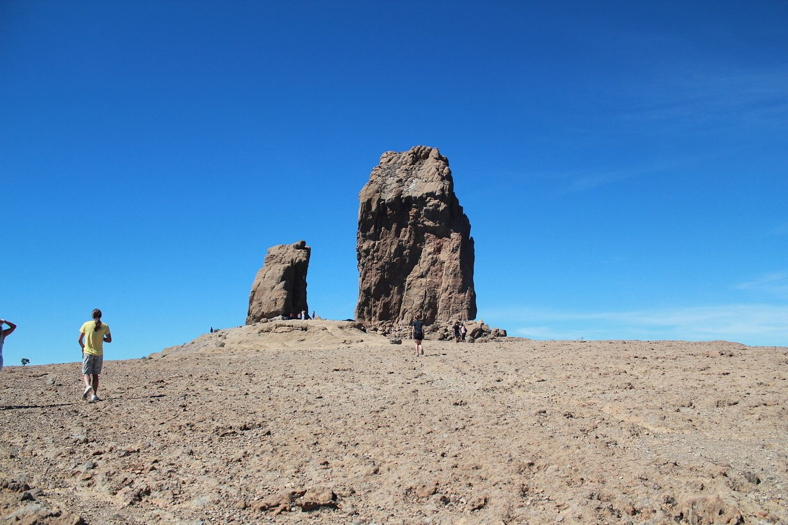
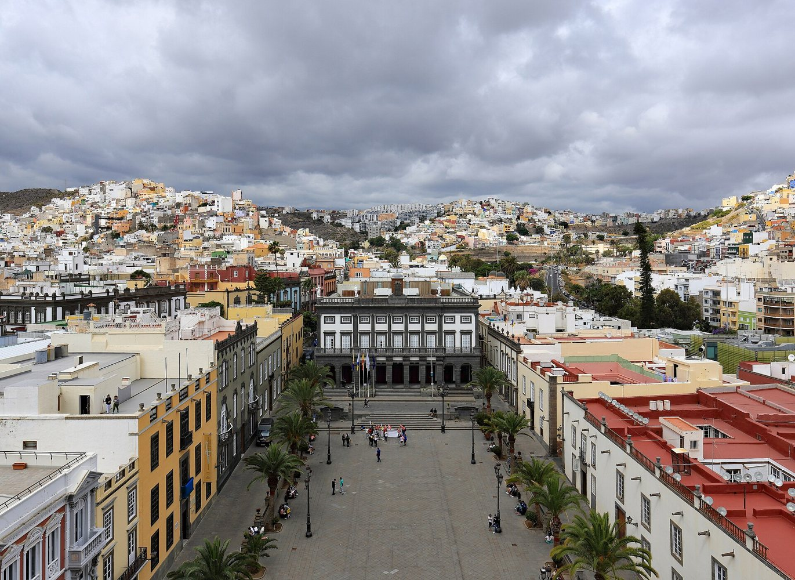
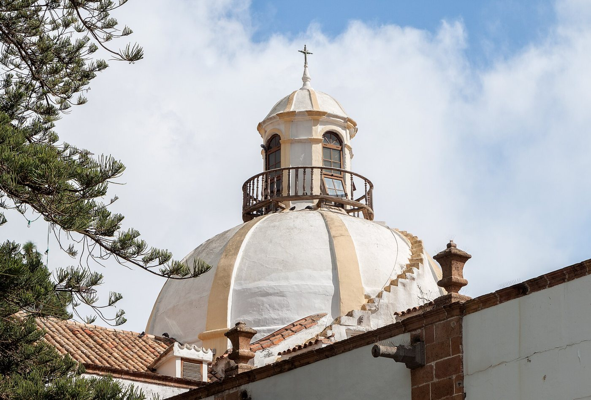
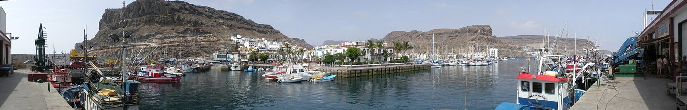
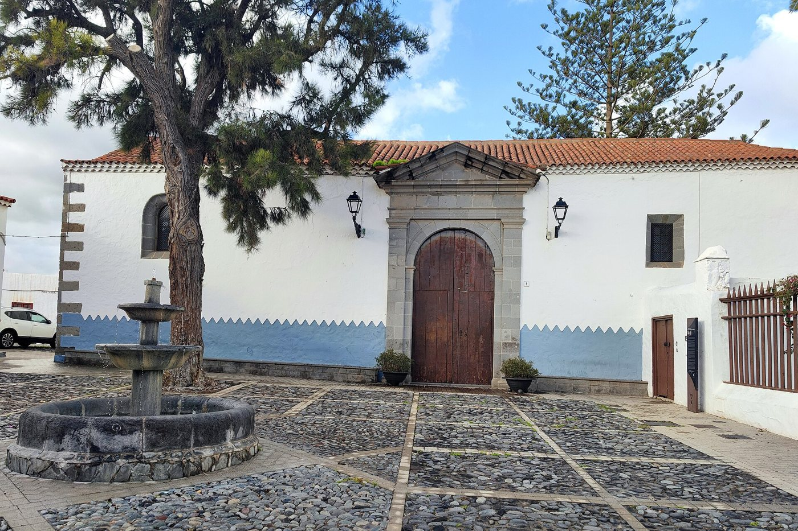
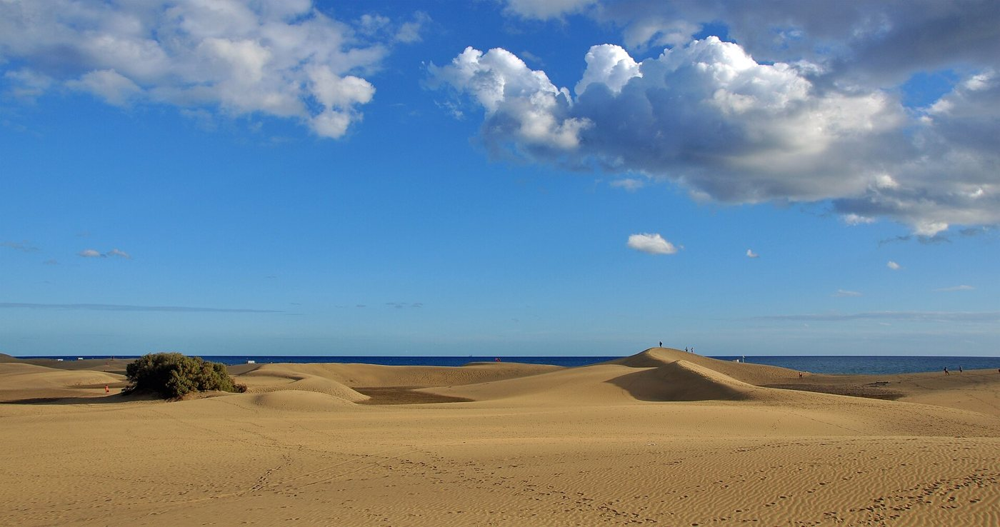
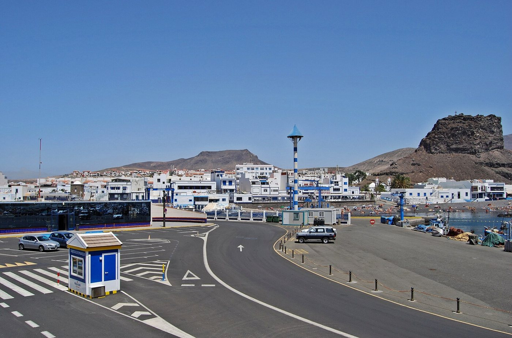

San Telmo
El hotel está junto a San Telmo, una base práctica para recorrer Triana a pie. Esta noche, lo mejor es instalarte y descansar.
Ver ubicación
Tu viaje por Gran Canaria, día a día.
Pueblos, caminos y sabores para disfrutar sin prisas.
Seis días para descubrir la isla desde Las Palmas, con coche para las excursiones y tiempo para pasear, comer y cambiar de plan si el cielo lo pide.
Todos los lugares del viaje, con colores por día y filtros para encontrar dónde ir y dónde comer.

Una noche para recoger el coche, instalarte y descansar
Ver el día ↗
Mercadillo, balcones tradicionales y cascos históricos
Ver el día ↗
Puerto marinero, faro, Charca y dunas
Ver el día ↗La jornada de montaña: elige el día más despejado
Ver el día ↗Vegueta y Triana a pie; Las Canteras por la tarde
Ver el día ↗
Vuelo Vueling a Bilbao: salida a las 19:30, hora canaria
Ver el día ↗Ida: sábado 31 de octubre. Vueling desde Bilbao a las 20:00; llegada prevista a Gran Canaria a las 22:10, según los datos facilitados.
Vuelta actualizada: jueves 5 de noviembre. Salida de Gran Canaria a las 19:30 con Vueling hacia Bilbao. No se ha comprobado el estado de los vuelos.
Hotel: Sercotel Hotel Parque, Muelle Las Palmas, 2, 35003 Las Palmas de Gran Canaria. Coche: Goldcar, aeropuerto.
Los enlaces subrayados abren rutas o lugares en Google Maps. Las horas son propuestas de visita, no reservas. Los tiempos de conducción son estimaciones sin tráfico ni aparcamiento. Los presupuestos de comida son por persona, con una bebida sencilla; no incluyen vino embotellado ni pescado grande al peso.
Tiempo: se consultó información el 31/10/2026, pero no se pudo verificar una previsión diaria homogénea hasta el 5/11. Hay indicios de inestabilidad al inicio del viaje. Mantén intercambiables el día de cumbre y el de ciudad; comprueba lluvia, viento, visibilidad y avisos antes de subir.
Consultar AEMET: Las Palmas Consultar AEMET: Tejeda y cumbresUna noche para recoger el coche, instalarte y descansar
El hotel está junto a San Telmo, una base práctica para recorrer Triana a pie. Esta noche, lo mejor es instalarte y descansar.
Ver ubicaciónGoldcar publica cierre a las 22:59. Con la llegada prevista a las 22:10, confirma cómo gestionan retrasos y recogida fuera de horario. Teléfono publicado: +34 918 341 400.
Avisa al hotel de tu llegada tardía y consulta el aparcamiento más práctico. Comprueba que la reserva del coche permita devolverlo el jueves alrededor de las 16:30–17:00; una ampliación puede cambiar el precio.
Cena antes de embarcar o lleva algo previsto. No se recomienda una reserva de restaurante esa noche: la hora de llegada al hotel es demasiado incierta.
Recuerda: las horas de los billetes se expresan en la hora local de cada aeropuerto. Canarias está una hora por detrás de Bilbao.
Mercadillo, balcones tradicionales y cascos históricos
Recorre la calle Real y la plaza del Pino. El mercadillo es la ocasión para probar chorizo de Teror, quesos, panes y dulces.
Ver ubicaciónLa iglesia de San Juan Bautista y las calles del casco histórico son las protagonistas de una tarde tranquila.
Ver ubicaciónOpción económica: Bochinche Bar Suso. C/ Párroco Faustino Alonso, 14, Arbejales. Presupuesto: 15–20 €. Pregunta por ropa vieja, potaje, carne de cerdo y postre de gofio. Horario publicado: domingo 12:00–16:00. Tel. 928 023 126. Hay que desviarse en coche.
Sin salir del mercadillo: D’Fernandez. Plaza de Sintes, local 4. Cocina canaria: cabra estofada, ropa vieja, gofio y productos de Teror. Domingo publicado: 11:00–19:00. Tel. 694 233 515. No se ha verificado carta de precios actual: consúltala antes de pedir.
El mercadillo anuncia domingos de 09:00 a 15:00. Al ser Todos los Santos, confirma cambios y reserva la comida. Con lluvia intensa, utiliza el plan cultural de Las Palmas; Teror se puede visitar otro día, aunque sin el mercadillo.
Ayuntamiento: mercadillo de Teror D’Fernandez: cocina, horario y contactoPuerto marinero, faro, Charca y dunas
Pasea entre las calles blancas y el puerto antes de comer. El mercadillo es los viernes, por lo que no coincide con este viaje.
Ver ubicaciónCombina el faro, la Charca y un paseo por los itinerarios señalizados. La reserva se disfruta respetando las balizas y las zonas protegidas.
Ver ubicaciónExplanada del Castillete, 7. Presupuesto: 20–30 € por persona. Tel. 928 565 321. Confirma servicio de cocina el lunes a las 12:30.
La carta digital consultada publica sardinillas a 12,50 €, atún a la plancha a 14,50 € y calamares a 15,50 €. Son referencias, sujetas a cambios. Para controlar el gasto, elige platos con precio cerrado y consulta las guarniciones. Si pides pescado al peso, acuerda el precio total antes.
El mercadillo de Mogán es los viernes y no coincide con este viaje. En las dunas, sigue las balizas y señalización: Google Maps no sustituye los senderos autorizados. Si hay lluvia intensa o viento incómodo, acorta el paseo y usa otro día para la reserva natural.
Cofradía de Mogán: contacto Carta digital consultada
La jornada de montaña: elige el día más despejado
Elige un día con buena visibilidad. El paseo habitual tiene subida y terreno irregular: lleva agua, abrigo y calzado con agarre.
Ver ubicaciónDespués de la caminata, pasea por el pueblo y prueba su repostería de almendra: bienmesabe y mazapán.
Ver ubicaciónEl acceso está regulado: reserva previamente y comprueba el aparcamiento disuasorio y la guagua que correspondan. No conduzcas al inicio del sendero contando con poder aparcar. La aproximación habitual es de unos 1,5 km por sentido, con subida y terreno irregular; reserva unas 2 horas para caminar y disfrutar, además de los traslados.
Reservas y condiciones de acceso al Roque Nublo Turismo: información oficial de acceso y transporteAv. de los Almendros, 5, Tejeda. Presupuesto: 20–25 €. Carta publicada: gofio 6 €, papas con mojo 6 €, cabra en salsa 14 € y carne de cochino 12 €. Tel. 682 525 982. Confirma apertura el martes: existen horarios contradictorios en directorios. Si cambias el día de montaña, cambia también la reserva.
Casa del Caminero: carta publicadaPlan B: con niebla cerrada, tormenta, viento fuerte o avisos, intercambia con el día de ciudad. Lleva agua, calzado con agarre, impermeable y abrigo. Maps no representa la reserva ni el transporte obligatorio.
Vegueta y Triana a pie; Las Canteras por la tarde
Plazas, calles históricas, mercado y museos. Casa de Colón y El Museo Canario permiten adaptar el día si llueve.
Ver ubicaciónRecorre el paseo marítimo hasta La Puntilla. Puedes llegar desde el centro en guagua o taxi y dejar el coche aparcado.
Ver ubicaciónCalle Constantino, 16, Triana. Presupuesto: 20–25 € por persona. Buena ubicación para esta ruta y para volver al hotel a pie. Pregunta por ropa vieja, pata asada, morcilla dulce, quesos canarios y platos del día.
La carta publicada incluye papas con mojo a 7 € y queso tierno a 8,50 €. El horario consultado para el miércoles es 08:00–23:00, pero el horario de cocina puede ser más limitado. Pregunta por medias raciones si quieres probar varios platos.
El Museo Canario es una buena opción para conocer la población aborigen. Publica horario de lunes a viernes de 10:00 a 20:00. También permite completar este día si no te apetece playa.
El Museo Canario: información de visita Mercado de Vegueta: web y horarios Bodegón Lagunetas: ficha de Guía RepsolVuelo Vueling a Bilbao: salida a las 19:30, hora canaria
Dedica la mañana a sus calles y plazas históricas antes de bajar a la costa para comer.
Ver ubicaciónTras el almuerzo, da un paseo corto y tranquilo. Mantén el margen para repostar, devolver el coche y llegar a la terminal.
Ver ubicaciónMuelle de Taliarte, s/n. Tel. 928 134 387. Presupuesto: 25–30 € por persona, eligiendo raciones sencillas. Pregunta por gofio escaldado, sardinas o pescado del día; confirma el precio de cualquier pieza al peso.
La web anuncia apertura los jueves de 08:00 a 23:00; eso no equivale al horario de cocina. Reserva para las 13:00 y confirma servicio. No se han verificado los precios exactos de una carta actual.
Si el día se complica: suprime el paseo de tarde y ve al aeropuerto con margen. Comprueba el punto exacto de devolución en tu contrato de Goldcar: el enlace de Maps termina en el aeropuerto, no en una plaza de devolución concreta.

Para sustituir la cumbre o cambiar el día del sur
La Cueva Pintada es la visita cultural principal de esta alternativa. Reserva el pase; el museo cierra los lunes.
Ver ubicaciónCompleta el día paseando por Puerto de las Nieves y el casco de Agaete. Ajusta los recorridos al estado del mar y al tiempo.
Ver ubicaciónCueva Pintada: cierra los lunes. El horario publicado de octubre a mayo es martes a sábado 10:00–18:00 y domingos/festivos 11:00–18:00. Compra entrada anticipada y comprueba el pase disponible; no hay ninguna reserva realizada.
Cueva Pintada: información de Turismo de GáldarPaseo de los Poetas, 2, Puerto de las Nieves. Tel. 928 554 109. Cocina marinera, ropa vieja de pulpo y postres caseros. No se ha verificado carta actual de precios: pregunta por raciones y presupuesto antes de pedir.
Solo encaja aquí el martes si mantiene su horario: la ficha consultada publica cierre miércoles y jueves. No lo uses como parada del miércoles sin confirmación. Si cambias la excursión a ese día, elige un local abierto tras consultar su carta.
Angor: cocina, contacto y horario publicado Ruta: hotel → Cueva Pintada → Puerto de las Nieves → hotel1. Tiempo y avisos de la zona que vas a visitar.
2. Apertura y cocina del restaurante, especialmente el domingo festivo y el martes en Tejeda.
3. Reserva del Roque Nublo y transporte, o entrada de Cueva Pintada.
4. Hora de devolución del coche y condiciones del vuelo.
Guía preparada con la información consultada en esta conversación el 31/10/2026. Los enlaces oficiales y las cartas están incluidos en las páginas de cada día. Precios, disponibilidad, aperturas y tráfico pueden cambiar. Los enlaces de Google Maps son búsquedas/rutas por nombre, no itinerarios comprobados en tiempo real.